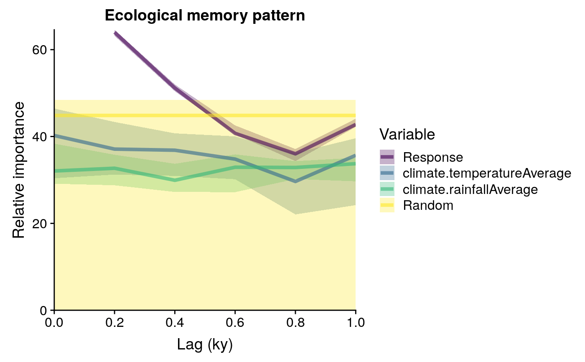

computeMemory.RdTakes the oputput of prepareLaggedData to fit the following model with Random Forest:
\(p_{t} = p_{t-1} +...+ p_{t-n} + d_{t} + d_{t-1} +...+ d_{t-n} + r\)
where:
\(d\) is a driver (several drivers can be added).
\(t\) is the time of any given value of the response p.
\(t-1\) is the lag number 1 (in time units).
\(p_{t-1} +...+ p_{t-n}\) represents the endogenous component of ecological memory.
\(d_{t-1} +...+ d_{t-n}\) represents the exogenous component of ecological memory.
\(d_{t}\) represents the concurrent effect of the driver over the response.
\(r\) represents a column of random values, used to test the significance of the variable importance scores returned by Random Forest.
computeMemory( lagged.data = NULL, drivers = NULL, response = "Response", add.random = TRUE, random.mode = "autocorrelated", repetitions = 10, subset.response = "none" )
| lagged.data | a lagged dataset resulting from |
|---|---|
| drivers | a string or vector of strings with variables to be used as predictors in the model (i.e. c("Suitability", "Driver.A")) |
| response | character string, name of the response variable (typically, "Response_0"). |
| add.random | if TRUE, adds a random term to the model, useful to assess the significance of the variable importance scores. |
| random.mode | either "white.noise" or "autocorrelated". See details. |
| repetitions | integer, number of random forest models to fit. |
| subset.response | character string with values "up", "down" or "none", triggers the subsetting of the input dataset. "up" only models memory on cases where the response's trend is positive, "down" selectes cases with negative trends, and "none" selects all cases. |
| min.node.size | integer, argument of the ranger function. Minimal number of samples to be allocated in a terminal node. Default is 5. |
| num.trees | integer, argument of the ranger function. Number of regression trees to be fitted (size of the forest). Default is 2000. |
| mtry | integer, argument of the ranger function. Number of variables to possibly split at in each node. Default is 2. |
| drivers | a character string or vector of character strings with variables to be used as predictors in the model (i.e. c("Suitability", "Driver.A")). Important: |
A list with 4 slots:
memory dataframe with five columns:
Variable character, names and lags of the different variables used to model ecological memory.
median numeric, median importance across repetitions of the given Variable according to Random Forest.
sd numeric, standard deviation of the importance values of the given Variable across repetitions.
min and max numeric, percentiles 0.05 and 0.95 of importance values of the given Variable across repetitions.
R2 vector, values of pseudo R-squared value obtained for the Random Forest model fitted on each repetition. Pseudo R-squared is the Pearson correlation beteween the observed and predicted data.
prediction dataframe, with the same columns as the dataframe in the slot memory, with the median and confidence intervals of the predictions of all random forest models fitted.
multicollinearity multicollinearity analysis on the input data performed with vif. A vif value higher than 5 indicates that the given variable is highly correlated with other variables.
This function uses the ranger package to fit Random Forest models. It fits the model explained above as many times as defined in the argument repetitions. To test the statistical significance of the variable importance scores returned by random forest, on each repetition the model is fitted with a different r (random) term. If random.mode equals "autocorrelated", the random term will have a temporal autocorrelation, and if it equals "white.noise", it will be a pseudo-random sequence of numbers generated with rnorm, with no temporal autocorrelation. The importance of the random sequence (as computed by random forest) is stored for each model run, and used as a benchmark to assess the importance of the other predictors used in the models. Importance values of other predictors that are above the median of the importance of the random term should be interpreted as non-random, and therefore, significant.
#loading data data(palaeodataLagged) memory.output <- computeMemory( lagged.data = palaeodataLagged, drivers = c("climate.temperatureAverage", "climate.rainfallAverage"), response = "Response", add.random = TRUE, random.mode = "autocorrelated", repetitions = 10, subset.response = "none" ) str(memory.output)#> List of 4 #> $ memory :'data.frame': 23 obs. of 6 variables: #> ..$ median : num [1:23] 64 51.2 40.7 36 42.8 ... #> ..$ sd : num [1:23] 0.532 0.597 0.863 0.998 0.711 ... #> ..$ min : num [1:23] 63.2 50.4 40.5 34.3 42.2 ... #> ..$ max : num [1:23] 64.6 52 42.6 37.1 44.1 ... #> ..$ Variable: Factor w/ 4 levels "Response","climate.temperatureAverage",..: 1 1 1 1 1 2 2 2 2 2 ... #> ..$ Lag : num [1:23] 0.2 0.4 0.6 0.8 1 0 0.2 0.4 0.6 0.8 ... #> $ R2 : num [1:10] 0.988 0.988 0.988 0.988 0.989 ... #> $ prediction :'data.frame': 3988 obs. of 4 variables: #> ..$ median: num [1:3988] 4.72 5.51 7.63 11.09 13.53 ... #> ..$ sd : num [1:3988] 0.139 0.131 0.109 0.116 0.153 ... #> ..$ min : num [1:3988] 4.48 5.34 7.44 10.94 13.26 ... #> ..$ max : num [1:3988] 4.83 5.73 7.69 11.25 13.65 ... #> $ multicollinearity:'data.frame': 17 obs. of 2 variables: #> ..$ variable: Factor w/ 17 levels "climate.rainfallAverage_0",..: 13 14 15 16 17 7 8 9 10 11 ... #> ..$ vif : num [1:17] 27.5 75 77.8 75 27.4 ...#> 'data.frame': 23 obs. of 6 variables: #> $ median : num 64 51.2 40.7 36 42.8 ... #> $ sd : num 0.532 0.597 0.863 0.998 0.711 ... #> $ min : num 63.2 50.4 40.5 34.3 42.2 ... #> $ max : num 64.6 52 42.6 37.1 44.1 ... #> $ Variable: Factor w/ 4 levels "Response","climate.temperatureAverage",..: 1 1 1 1 1 2 2 2 2 2 ... #> $ Lag : num 0.2 0.4 0.6 0.8 1 0 0.2 0.4 0.6 0.8 ...#>#> #>#> #> #>#>